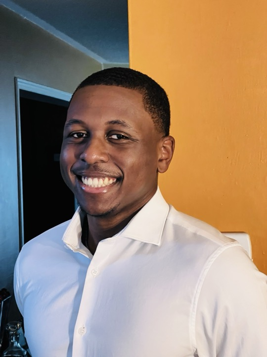

I'm in my final year in my Bachelor of Applied Science in Systems Design Engineering at the University of Waterloo.
Currently, I'm seeking thesis-based Master's/PhD opportunities and New Grad Machine Learning Engineer or Data Science roles to start in Summer/Fall 2027.
Broadly, I'm interested in managing robustness-consistency tradeoffs in algorithmic decision-making across multi-agent systems and prediction mechanisms. Methodologically, this can involve anything from theoretical algorithm design for fair allocations to constructing empirical models for uncovering latent preferences. Key motivations for me are the foundations of AI and policy modelling. Some applications I'm currently exploring include learning-augmented online mechanism design, stochastic causal discovery, differentiable social choice, dynamic MARL topologies, and priority-aware learning.
This summer, I worked under the supervision of Chair and Prof. Lisa Aultman-Hall as a research assistant at Waterloo and Statistics Canada deemed employee, investigating how typology affects travel demand model performance. Before that, I also worked under the supervision of Prof. Sharon Ferguson, developing AI-enabled teamwork support, funded by Microsoft's The New Future of Work Grant.
During my degree, I've completed 5 internships where I've worked on agentic systems, evaluation infrastructure, RAG workflows, and internal automation tools. Most recently, in Fall 2025, I was a Machine Learning Engineer Intern at Cognichip, building agents, tools, and infrastucture for an AI chip design IDE product.
I'm always happy to meet new people with similar interests, please reach out if you'd like to exchange ideas or chat about anything!